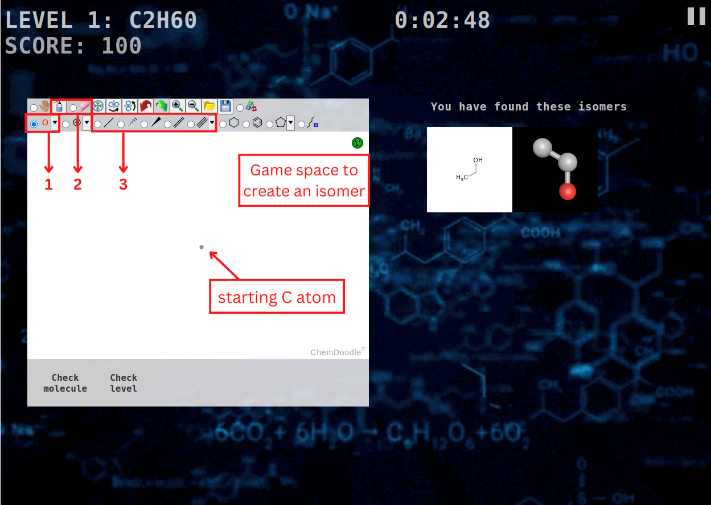

0:00:00
FIND THEM ALL
Record:
10
START GAME
CONTINUE GAME
HOW TO PLAY?
A chemistry game for CHEM 120 @
DePauw University
Paused
RESUME GAME
RESTART GAME
HOW TO PLAY?
MAIN MENU
Game Completed
Your Score:
PLAY AGAIN
MAIN MENU
Level Completed
Your Score:
NEXT LEVEL
MAIN MENU
How to play?
Find all the isomers of the given compounds. There are 8 levels, each with a hidden time limit.
Scoring:
Earn 60-100 points for each molecules found.
Lose 5 points for each duplicate, and 10 points for an incorrect one.
Earn 10 points for every 10 seconds early finishing before the time limit.
The score is cummulative from level 1.
The timer will count up from 0 for each level.
The game interface is the white space. Hover over each button on top to see its function.
To choose different atoms
To clear canvas or delete one bond or atom
To choose different bonds
The found molecules are on the right, both 2D and 3D. Try rotating the 3D :)

Close tutorial
How to play?
Find all the isomers of the given compounds. There are 8 levels, each with a hidden time limit.
Scoring:
Earn 60-100 points for each molecules found.
Lose 5 points for each duplicate, and 10 points for an incorrect one.
Earn 10 points for every 10 seconds early finishing before the time limit.
The score is cummulative from level 1.
The timer will count up from 0 for each level.
The game interface is the white space. Hover over each button on top to see its function.
To choose different atoms
To clear canvas or delete one bond or atom
To choose different bonds
The found molecules are on the right, both 2D and 3D. Try rotating the 3D :)
Close tutorial
Sketcher canvas
Check molecule
Check level
You have found these isomers